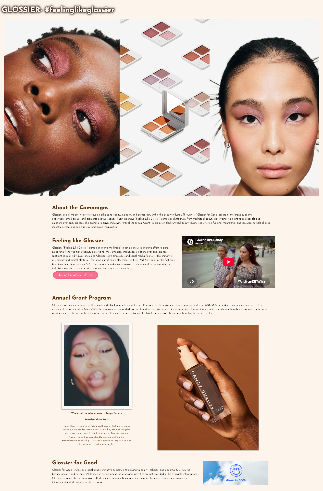
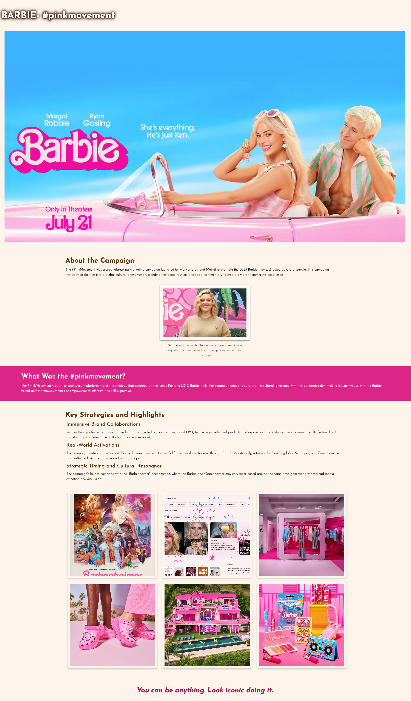
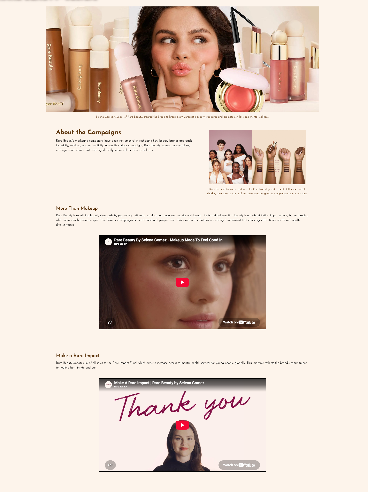

Editorial Web Design · Beauty & Fashion Marketing
The Babe Edit
A hand-coded editorial site exploring the marketing campaigns that redefined beauty, fashion, and self-expression — built as a final project for a web design course, and driven by a genuine interest in the strategy behind iconic brand moments.
Overview
The Babe Edit is a fully coded website built with HTML, CSS, and Bootstrap. It spotlights iconic beauty and fashion marketing campaigns through bold visuals and sleek layout design.
Design Process
I created a bright, collage-style hero image to immediately capture the bold, editorial energy of modern campaigns. The site's beige and brown base tones balance the vibrant imagery, while a pop of bright pink serves as an accent to tie the brand together.
Featured Breakdowns
Aerie's #AerieREAL, Rare Beauty's #BeRare, Barbie's global #PinkMovement, and Glossier's emotion-driven brand storytelling — each analyzed through the lens of what made the campaign resonate and endure.


